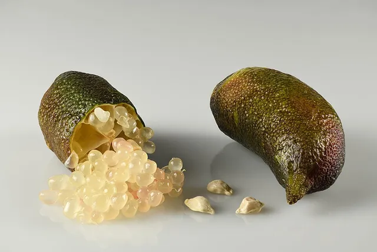

Desserts · Popular in Subtropical east coast
Finger lime pavlova
Finger lime pavlova is made with wild finger lime, a favourite in Subtropical east coast.

How do you make finger lime pavlova?
Pavlova topped with cream and finger lime caviar.
Wild ingredients
- Finger lime (Citrus australasica): in season December to May
Watch the recipe

Video: Kunal Kapur on YouTube